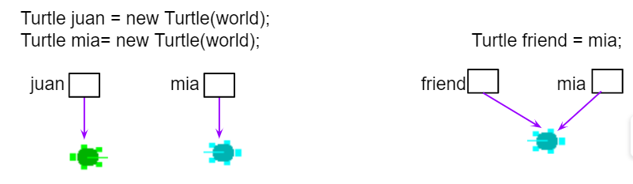

3.6 Methods: Passing and Returning References of an Object
Class Creation
Passing and Returning Object References
Classes often interact through other objects
This topic keeps the textbook shift from single-class examples to interacting classes.
- one object can be stored inside another object
- one object reference can be passed into a method
- a method can also return an object reference
That power creates both flexibility and risk.
Objects as Instance Variables
A class can have a has-a relationship with another class
Example from the textbook:
- a
Person can have an Address
- the
Address object has its own instance variables
- the
Person class stores that object as part of its own state
This is a has-a relationship.
Objects as Arguments
Java still uses call by value, but the copied value may be a reference

Aliasing with object references
- when an argument is an object reference, Java copies the reference
- it does not copy the whole object
- the parameter and argument can become aliases for the same object
This is why object parameters behave differently from primitive parameters.
Mutable vs Immutable
Shared references matter only when the object can change
Immutable
- examples include
String
- methods do not change the original object
- sharing the reference is usually safe
Mutable
- custom classes with setters are often mutable
- one reference can change the object’s state
- all aliases see that changed state
The textbook’s rule of thumb is not to modify mutable parameter objects unless the specification requires it.
Copying Parameter Objects
Copy when the class should not share outside state
When a constructor receives a mutable object, storing the original reference can cause surprising side effects.
- changing the original object later may also change the object’s internal state
- one fix is to create a new object using values from the parameter object
- another fix is to use a copy constructor
For AP CSA, this protects the instance variable from pointing at the caller’s original mutable object.
Same-Class Parameters
A method can access private data of another object only when it is the same class type
The textbook makes this boundary explicit:
Person methods can access private fields of another Person object- they cannot directly access private fields of an
Address object
- access still depends on the enclosing class type
This is a precise rule that students often miss.
Returning Objects
Returning a reference shares access to the same object
If a method returns an object reference:
- the returned value is the reference, not a copied object
- the caller may now have another alias to the same object
- if the object is mutable, the caller may change it through that returned reference
Returning objects is powerful, but it reintroduces the same mutability concern seen with parameters.
Classroom Tasks
Practice worth keeping
Friends and birthdays challenge
Retained classroom work for this topic:
- identify has-a relationships between classes
- trace aliasing when object references are passed as arguments
- explain when a mutable object should be copied
- distinguish returning a reference from returning a copied object
- apply same-class private-access rules correctly
- 3.6.7 Coding Challenge: Friends and Birthdays
Classroom Check
A complete answer should…
- explain that object arguments pass a copied reference, not a copied object
- define aliasing in the context of object references
- distinguish mutable from immutable objects
- explain why copying a parameter object can protect class state
- describe the risk of returning a mutable object reference directly